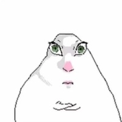

Теория информации
Проекты и контрольная работа
Захарчук Елизавета Дмитриевна · гр. 1451 · БГУ

Проекты
Проект 1
Расчёт ABBA
Перестановки букв: гласные! × согласные!
ОткрытьПроект 2
Булева логика
AND, OR, XOR над числами и бит чётности
ОткрытьПроект 3
Код Хэмминга
Код (7, 4): поиск и исправление ошибки
ОткрытьПроект 4
LB(N) и Шеннон
Мера Хартли и энтропия Шеннона
ОткрытьПроект 5
Генератор WOW/BOW
Источник с вероятностями W, O, B
ОткрытьПроект 6
Равновесие Нэша
Дилемма заключённого
Открыть